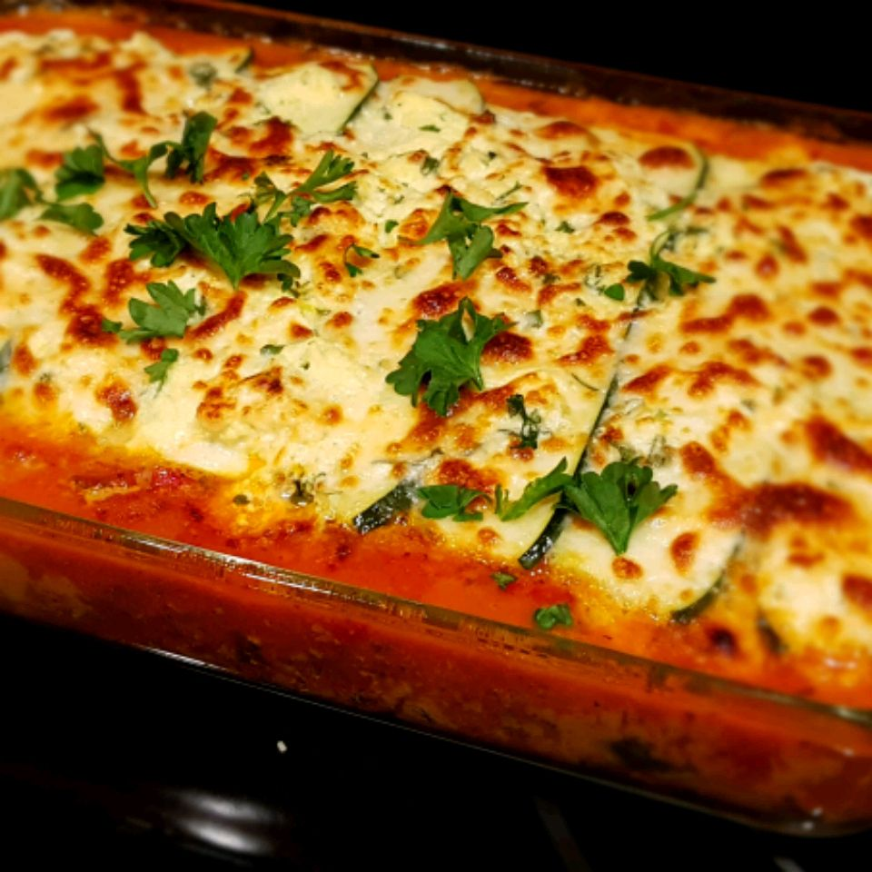

Home
Lasagna

Description
Zucchini lasagna is an ideal low-carb dinner to satisfy your Italian food craving. It's perfect in the summer
with garden-fresh veggies and herbs,
or in the winter when you need a comforting meal. You won't even miss the noodles in this one!
This zucchini lasagna recipe might be low in carbs, but it’s high in flavor!
Ingredients
- 2 Large Zucchini
- Seasonings:
- Salt
- Pepper
- Fresh Basil
- Fresh Oregano
- Fresh Parsley
- Chicken
- Green Bell Pepper
- Onion
- Mushrooms
- Frozen Spinach
- Tomato Paste & Sauce
- Red Wine
- Cheese:
- Low-Fat Ricotta Cheese
- Mozzarella Cheese
- Parmesan Cheese
- Egg
Steps
- Slice, salt and drain the zucchini.
- Make the meat sauce.
- Make the tomato sauce.
- Make the ricotta mixture.
- Assemble the zucchini lasagna.
- Bake.